ggplot-Objekt mit U-spezifischem theme anpassen
theme_u.RdModifiziert ein ggplot-Objekt mit U-spezifischen Einstellungen, indem ein theme hinzugefügt wird.
Details
Dieses theme legt die Hausschrift Open Sans fest.
Dazu ist das package https://github.com/wch/extrafont#extrafont erforderlich.
Examples
library(ggplot2)
library(extrafont)
#> Warning: package 'extrafont' was built under R version 4.1.3
#> Registering fonts with R
suppressWarnings(loadfonts()) ## keine Warnhinweise auf bereits registrierte Schriften
#> Arial Black already registered with windowsFonts().
#> Arial already registered with windowsFonts().
#> Arial Narrow already registered with windowsFonts().
#> Bahnschrift already registered with windowsFonts().
#> Book Antiqua already registered with windowsFonts().
#> Bookman Old Style already registered with windowsFonts().
#> Bookshelf Symbol 7 already registered with windowsFonts().
#> Bradley Hand ITC already registered with windowsFonts().
#> Calibri already registered with windowsFonts().
#> Calibri Light already registered with windowsFonts().
#> Cambria already registered with windowsFonts().
#> Candara already registered with windowsFonts().
#> Candara Light already registered with windowsFonts().
#> Century already registered with windowsFonts().
#> Century Gothic already registered with windowsFonts().
#> Comic Sans MS already registered with windowsFonts().
#> Consolas already registered with windowsFonts().
#> Constantia already registered with windowsFonts().
#> Corbel already registered with windowsFonts().
#> Corbel Light already registered with windowsFonts().
#> Courier New already registered with windowsFonts().
#> Ebrima already registered with windowsFonts().
#> Franklin Gothic Medium already registered with windowsFonts().
#> Freestyle Script already registered with windowsFonts().
#> French Script MT already registered with windowsFonts().
#> Gabriola already registered with windowsFonts().
#> Gadugi already registered with windowsFonts().
#> Garamond already registered with windowsFonts().
#> Georgia already registered with windowsFonts().
#> Haettenschweiler already registered with windowsFonts().
#> HoloLens MDL2 Assets already registered with windowsFonts().
#> Impact already registered with windowsFonts().
#> Ink Free already registered with windowsFonts().
#> Javanese Text already registered with windowsFonts().
#> Juice ITC already registered with windowsFonts().
#> Kristen ITC already registered with windowsFonts().
#> Leelawadee already registered with windowsFonts().
#> Leelawadee UI already registered with windowsFonts().
#> Leelawadee UI Semilight already registered with windowsFonts().
#> Lucida Console already registered with windowsFonts().
#> Lucida Handwriting already registered with windowsFonts().
#> Lucida Sans Unicode already registered with windowsFonts().
#> Malgun Gothic already registered with windowsFonts().
#> Malgun Gothic Semilight already registered with windowsFonts().
#> Marlett already registered with windowsFonts().
#> Microsoft Himalaya already registered with windowsFonts().
#> Microsoft Yi Baiti already registered with windowsFonts().
#> Microsoft New Tai Lue already registered with windowsFonts().
#> Microsoft PhagsPa already registered with windowsFonts().
#> Microsoft Sans Serif already registered with windowsFonts().
#> Microsoft Tai Le already registered with windowsFonts().
#> Microsoft Uighur already registered with windowsFonts().
#> Mistral already registered with windowsFonts().
#> Mongolian Baiti already registered with windowsFonts().
#> Monotype Corsiva already registered with windowsFonts().
#> MS Outlook already registered with windowsFonts().
#> MS Reference Sans Serif already registered with windowsFonts().
#> MS Reference Specialty already registered with windowsFonts().
#> MT Extra already registered with windowsFonts().
#> MV Boli already registered with windowsFonts().
#> Myanmar Text already registered with windowsFonts().
#> Nirmala UI already registered with windowsFonts().
#> Nirmala UI Semilight already registered with windowsFonts().
#> Open Sans already registered with windowsFonts().
#> Open Sans ExtraBold already registered with windowsFonts().
#> Open Sans Light already registered with windowsFonts().
#> Open Sans SemiBold already registered with windowsFonts().
#> Oswald already registered with windowsFonts().
#> Oswald ExtraLight already registered with windowsFonts().
#> Oswald Light already registered with windowsFonts().
#> Oswald Medium already registered with windowsFonts().
#> Oswald SemiBold already registered with windowsFonts().
#> Palatino Linotype already registered with windowsFonts().
#> Papyrus already registered with windowsFonts().
#> Pristina already registered with windowsFonts().
#> Segoe MDL2 Assets already registered with windowsFonts().
#> Segoe Print already registered with windowsFonts().
#> Segoe Script already registered with windowsFonts().
#> Segoe UI already registered with windowsFonts().
#> Segoe UI Light already registered with windowsFonts().
#> Segoe UI Semibold already registered with windowsFonts().
#> Segoe UI Semilight already registered with windowsFonts().
#> Segoe UI Black already registered with windowsFonts().
#> Segoe UI Emoji already registered with windowsFonts().
#> Segoe UI Historic already registered with windowsFonts().
#> Segoe UI Symbol already registered with windowsFonts().
#> SimSun-ExtB already registered with windowsFonts().
#> Sylfaen already registered with windowsFonts().
#> Symbol already registered with windowsFonts().
#> Tahoma already registered with windowsFonts().
#> Tempus Sans ITC already registered with windowsFonts().
#> Times New Roman already registered with windowsFonts().
#> Trebuchet MS already registered with windowsFonts().
#> Verdana already registered with windowsFonts().
#> Webdings already registered with windowsFonts().
#> Wingdings already registered with windowsFonts().
#> Wingdings 2 already registered with windowsFonts().
#> Wingdings 3 already registered with windowsFonts().
#> Arial already registered with pdfFont().
#> Arial Black already registered with pdfFont().
#> Arial Narrow already registered with pdfFont().
#> Bahnschrift already registered with pdfFont().
#> Book Antiqua already registered with pdfFont().
#> Bookman Old Style already registered with pdfFont().
#> Bookshelf Symbol 7 already registered with pdfFont().
#> Bradley Hand ITC already registered with pdfFont().
#> Calibri already registered with pdfFont().
#> Calibri Light already registered with pdfFont().
#> No regular (non-bold, non-italic) version of Cambria. Skipping setup for this font.
#> Candara already registered with pdfFont().
#> Candara Light already registered with pdfFont().
#> Century already registered with pdfFont().
#> Century Gothic already registered with pdfFont().
#> Comic Sans MS already registered with pdfFont().
#> Consolas already registered with pdfFont().
#> Constantia already registered with pdfFont().
#> Corbel already registered with pdfFont().
#> Corbel Light already registered with pdfFont().
#> Courier New already registered with pdfFont().
#> Ebrima already registered with pdfFont().
#> Franklin Gothic Medium already registered with pdfFont().
#> Freestyle Script already registered with pdfFont().
#> French Script MT already registered with pdfFont().
#> Gabriola already registered with pdfFont().
#> Gadugi already registered with pdfFont().
#> Garamond already registered with pdfFont().
#> Georgia already registered with pdfFont().
#> Haettenschweiler already registered with pdfFont().
#> HoloLens MDL2 Assets already registered with pdfFont().
#> Impact already registered with pdfFont().
#> Ink Free already registered with pdfFont().
#> Javanese Text already registered with pdfFont().
#> Juice ITC already registered with pdfFont().
#> Kristen ITC already registered with pdfFont().
#> Leelawadee already registered with pdfFont().
#> Leelawadee UI already registered with pdfFont().
#> Leelawadee UI Semilight already registered with pdfFont().
#> Lucida Console already registered with pdfFont().
#> No regular (non-bold, non-italic) version of Lucida Handwriting. Skipping setup for this font.
#> Lucida Sans Unicode already registered with pdfFont().
#> MS Outlook already registered with pdfFont().
#> MS Reference Sans Serif already registered with pdfFont().
#> MS Reference Specialty already registered with pdfFont().
#> MT Extra already registered with pdfFont().
#> MV Boli already registered with pdfFont().
#> Malgun Gothic already registered with pdfFont().
#> Malgun Gothic Semilight already registered with pdfFont().
#> Marlett already registered with pdfFont().
#> Microsoft Himalaya already registered with pdfFont().
#> Microsoft New Tai Lue already registered with pdfFont().
#> Microsoft PhagsPa already registered with pdfFont().
#> Microsoft Sans Serif already registered with pdfFont().
#> Microsoft Tai Le already registered with pdfFont().
#> Microsoft Uighur already registered with pdfFont().
#> Microsoft Yi Baiti already registered with pdfFont().
#> Mistral already registered with pdfFont().
#> Mongolian Baiti already registered with pdfFont().
#> Monotype Corsiva already registered with pdfFont().
#> Myanmar Text already registered with pdfFont().
#> Nirmala UI already registered with pdfFont().
#> Nirmala UI Semilight already registered with pdfFont().
#> Open Sans already registered with pdfFont().
#> Open Sans ExtraBold already registered with pdfFont().
#> Open Sans Light already registered with pdfFont().
#> Open Sans SemiBold already registered with pdfFont().
#> Oswald already registered with pdfFont().
#> Oswald ExtraLight already registered with pdfFont().
#> Oswald Light already registered with pdfFont().
#> Oswald Medium already registered with pdfFont().
#> Oswald SemiBold already registered with pdfFont().
#> Palatino Linotype already registered with pdfFont().
#> Papyrus already registered with pdfFont().
#> Pristina already registered with pdfFont().
#> Segoe MDL2 Assets already registered with pdfFont().
#> Segoe Print already registered with pdfFont().
#> Segoe Script already registered with pdfFont().
#> Segoe UI already registered with pdfFont().
#> Segoe UI Black already registered with pdfFont().
#> Segoe UI Emoji already registered with pdfFont().
#> Segoe UI Historic already registered with pdfFont().
#> Segoe UI Light already registered with pdfFont().
#> Segoe UI Semibold already registered with pdfFont().
#> Segoe UI Semilight already registered with pdfFont().
#> Segoe UI Symbol already registered with pdfFont().
#> SimSun-ExtB already registered with pdfFont().
#> Sylfaen already registered with pdfFont().
#> Symbol already registered with pdfFont().
#> Tahoma already registered with pdfFont().
#> Tempus Sans ITC already registered with pdfFont().
#> Times New Roman already registered with pdfFont().
#> Trebuchet MS already registered with pdfFont().
#> Verdana already registered with pdfFont().
#> Webdings already registered with pdfFont().
#> Wingdings already registered with pdfFont().
#> Wingdings 2 already registered with pdfFont().
#> Wingdings 3 already registered with pdfFont().
#> Arial already registered with postscriptFont().
#> Arial Black already registered with postscriptFont().
#> Arial Narrow already registered with postscriptFont().
#> Bahnschrift already registered with postscriptFont().
#> Book Antiqua already registered with postscriptFont().
#> Bookman Old Style already registered with postscriptFont().
#> Bookshelf Symbol 7 already registered with postscriptFont().
#> Bradley Hand ITC already registered with postscriptFont().
#> Calibri already registered with postscriptFont().
#> Calibri Light already registered with postscriptFont().
#> No regular (non-bold, non-italic) version of Cambria. Skipping setup for this font.
#> Candara already registered with postscriptFont().
#> Candara Light already registered with postscriptFont().
#> Century already registered with postscriptFont().
#> Century Gothic already registered with postscriptFont().
#> Comic Sans MS already registered with postscriptFont().
#> Consolas already registered with postscriptFont().
#> Constantia already registered with postscriptFont().
#> Corbel already registered with postscriptFont().
#> Corbel Light already registered with postscriptFont().
#> Courier New already registered with postscriptFont().
#> Ebrima already registered with postscriptFont().
#> Franklin Gothic Medium already registered with postscriptFont().
#> Freestyle Script already registered with postscriptFont().
#> French Script MT already registered with postscriptFont().
#> Gabriola already registered with postscriptFont().
#> Gadugi already registered with postscriptFont().
#> Garamond already registered with postscriptFont().
#> Georgia already registered with postscriptFont().
#> Haettenschweiler already registered with postscriptFont().
#> HoloLens MDL2 Assets already registered with postscriptFont().
#> Impact already registered with postscriptFont().
#> Ink Free already registered with postscriptFont().
#> Javanese Text already registered with postscriptFont().
#> Juice ITC already registered with postscriptFont().
#> Kristen ITC already registered with postscriptFont().
#> Leelawadee already registered with postscriptFont().
#> Leelawadee UI already registered with postscriptFont().
#> Leelawadee UI Semilight already registered with postscriptFont().
#> Lucida Console already registered with postscriptFont().
#> No regular (non-bold, non-italic) version of Lucida Handwriting. Skipping setup for this font.
#> Lucida Sans Unicode already registered with postscriptFont().
#> MS Outlook already registered with postscriptFont().
#> MS Reference Sans Serif already registered with postscriptFont().
#> MS Reference Specialty already registered with postscriptFont().
#> MT Extra already registered with postscriptFont().
#> MV Boli already registered with postscriptFont().
#> Malgun Gothic already registered with postscriptFont().
#> Malgun Gothic Semilight already registered with postscriptFont().
#> Marlett already registered with postscriptFont().
#> Microsoft Himalaya already registered with postscriptFont().
#> Microsoft New Tai Lue already registered with postscriptFont().
#> Microsoft PhagsPa already registered with postscriptFont().
#> Microsoft Sans Serif already registered with postscriptFont().
#> Microsoft Tai Le already registered with postscriptFont().
#> Microsoft Uighur already registered with postscriptFont().
#> Microsoft Yi Baiti already registered with postscriptFont().
#> Mistral already registered with postscriptFont().
#> Mongolian Baiti already registered with postscriptFont().
#> Monotype Corsiva already registered with postscriptFont().
#> Myanmar Text already registered with postscriptFont().
#> Nirmala UI already registered with postscriptFont().
#> Nirmala UI Semilight already registered with postscriptFont().
#> Open Sans already registered with postscriptFont().
#> Open Sans ExtraBold already registered with postscriptFont().
#> Open Sans Light already registered with postscriptFont().
#> Open Sans SemiBold already registered with postscriptFont().
#> Oswald already registered with postscriptFont().
#> Oswald ExtraLight already registered with postscriptFont().
#> Oswald Light already registered with postscriptFont().
#> Oswald Medium already registered with postscriptFont().
#> Oswald SemiBold already registered with postscriptFont().
#> Palatino Linotype already registered with postscriptFont().
#> Papyrus already registered with postscriptFont().
#> Pristina already registered with postscriptFont().
#> Segoe MDL2 Assets already registered with postscriptFont().
#> Segoe Print already registered with postscriptFont().
#> Segoe Script already registered with postscriptFont().
#> Segoe UI already registered with postscriptFont().
#> Segoe UI Black already registered with postscriptFont().
#> Segoe UI Emoji already registered with postscriptFont().
#> Segoe UI Historic already registered with postscriptFont().
#> Segoe UI Light already registered with postscriptFont().
#> Segoe UI Semibold already registered with postscriptFont().
#> Segoe UI Semilight already registered with postscriptFont().
#> Segoe UI Symbol already registered with postscriptFont().
#> SimSun-ExtB already registered with postscriptFont().
#> Sylfaen already registered with postscriptFont().
#> Symbol already registered with postscriptFont().
#> Tahoma already registered with postscriptFont().
#> Tempus Sans ITC already registered with postscriptFont().
#> Times New Roman already registered with postscriptFont().
#> Trebuchet MS already registered with postscriptFont().
#> Verdana already registered with postscriptFont().
#> Webdings already registered with postscriptFont().
#> Wingdings already registered with postscriptFont().
#> Wingdings 2 already registered with postscriptFont().
#> Wingdings 3 already registered with postscriptFont().
ggplot(iris, aes(Sepal.Length, Sepal.Width)) +
geom_point() +
theme_u()
